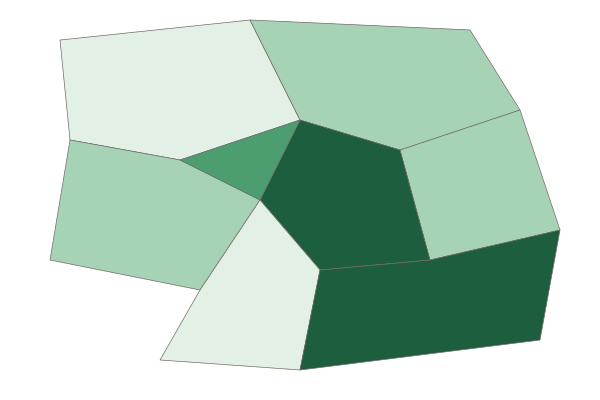

Unit 6 · 12 to 17% of the exam
Unit 6 practice test: Cities and Urban Land-Use Patterns and Processes
twelve questions, every option explained
12 exam-style questions from the unit, free, with an explanation for every option. Each has four answer choices (the real exam and the practice exams have five), and sets share one map, table, chart, image or passage. None of them is in the two practice exams. Covers: The Origin and Influences of Urbanization; Cities Across the World; Cities and Globalization; The Size and Distribution of Cities; The Internal Structure of Cities; Density and Land Use; Infrastructure; Urban Sustainability; Urban Data; Challenges of Urban Changes; Challenges of Urban Sustainability.

Text
Field notes from a city in Latin America
Invented field notes for practice, 2026. "We started at the cathedral on the main plaza, among banks and government offices. From there a wide avenue lined with office towers, embassies and mansions runs west for eight kilometers to a new shopping mall and a gated suburb. In the other directions, the houses near the center are old but solid. Farther out, families are adding second floors to concrete homes. On the dry hills at the city's edge, people who arrived in the last few years have built houses from brick and metal sheets on land they do not own. Water arrives by truck twice a week."
1. Which model best fits the city in the field notes?
- The concentric zone model
- The galactic city model
- The Latin American city model
- The African city model
Show the answer
A CBD by the main plaza, a wealthy avenue running out to a mall and an elite suburb, and the poorest, newest homes at the edge match the Latin American city model.
- The concentric zone model: The concentric zone model puts the poorest near the center, not at the edge.
- The galactic city model: The galactic city model has edge cities along a beltway; the notes describe none.
- Correct: The Latin American city model: Right: plaza, spine and peripheral squatter settlements.
- The African city model: The African city model has three CBDs; the notes describe one.
2. In the Latin American city model, what is the wide avenue with office towers and mansions running to a mall?
- The zone of maturity
- The spine
- The zone in transition
- An edge city
Show the answer
The spine is a wedge of commerce and wealthy homes that runs from the CBD along a grand avenue.
- The zone of maturity: The zone of maturity is a ring of older, solid homes.
- Correct: The spine: Right: the spine and its elite residential sector.
- The zone in transition: The zone in transition belongs to the concentric zone model.
- An edge city: An edge city is a suburban job center in North American models.
3. Compared with the concentric zone model, where do the poorest residents live in the field notes, and why?
- At the edge, where newcomers build on land they do not own
- Near the center, because old housing there is cheap
- Along the avenue, because it has the most jobs
- In the gated suburb, because land there is free
Show the answer
In many Latin American cities, the newest and poorest arrivals build on land they do not own at the edge, where they can settle without buying or renting. The concentric zone model puts the poorest near the center instead.
- Correct: At the edge, where newcomers build on land they do not own: Right: the pattern is reversed from the concentric zone model.
- Near the center, because old housing there is cheap: That is where the concentric zone model puts them; the notes put them at the edge.
- Along the avenue, because it has the most jobs: The avenue holds offices and mansions.
- In the gated suburb, because land there is free: The gated suburb is for wealthy families.
4. The notes say water reaches the hillside homes by truck twice a week. What does that detail suggest about these homes?
- They are in the zone of maturity, the oldest part of the city
- They are part of the wealthy spine along the avenue
- They were built by the city government for new workers
- They are squatter settlements not yet linked to city water pipes
Show the answer
Squatter settlements are built by residents on land they do not own, often before the city lays water pipes or sewers, so water must be trucked in.
- They are in the zone of maturity, the oldest part of the city: The zone of maturity holds older, solid homes near the center with full services.
- They are part of the wealthy spine along the avenue: The spine is the richest part of the city.
- They were built by the city government for new workers: The notes say residents built the homes themselves on land they do not own.
- Correct: They are squatter settlements not yet linked to city water pipes: Right: self-built homes at the edge often lack piped water.
Map
Farmland lost to building in Country A, 2000 to 2020

Farmland lost to building, 2000 to 2020 (percent, invented)
- Under 2%
- 2% to 5%
- Over 5% to 10%
- Over 10%
5. Which statement best describes the pattern on the map?
- Loss was highest in the Northern Hills
- Loss was highest in the capital and on the coast
- Each province lost about the same share
- Loss was highest along the eastern border
Show the answer
The darkest class (over 10%) covers the Capital Region and the South Coast; the Northern Hills and Southern Forest are in the lightest class.
- Loss was highest in the Northern Hills: The Northern Hills is in the lowest class.
- Correct: Loss was highest in the capital and on the coast: Right: the most farmland was lost around the largest cities.
- Each province lost about the same share: The provinces fall into four classes.
- Loss was highest along the eastern border: The Eastern Plains is in a middle class.
6. Which process best explains the pattern on the map?
- Sprawl around the largest cities
- Desertification in the northern provinces
- Rising farm prices in remote areas
- Migration from cities to farms
Show the answer
Farmland disappeared most where the biggest cities spread outward, a sign of sprawl. The pattern follows city growth, not physical change.
- Correct: Sprawl around the largest cities: Right: city growth eats the nearest farmland.
- Desertification in the northern provinces: The north lost the least land; the map is about building.
- Rising farm prices in remote areas: The map shows land converted to building, not prices.
- Migration from cities to farms: People moving to farms would not cause building on farmland near cities.
7. Country A's government wants to slow the loss of farmland around its capital. Which response fits the scale of the problem?
- A national ban on building new homes anywhere
- A single new park downtown
- A global treaty on farm trade
- A regional plan with a growth boundary
Show the answer
The loss is concentrated around one metro area, a regional problem across several local governments. A regional plan with a growth boundary targets it.
- A national ban on building new homes anywhere: A national ban would stop needed housing everywhere.
- A single new park downtown: One park does not limit building at the edge.
- A global treaty on farm trade: Farm trade does not control where cities build.
- Correct: A regional plan with a growth boundary: Right: a regional response for a regional problem.
8. Brazil built Brasília as a new capital far inland and opened it in 1960. Which driver of urbanization does this show?
- Better communication that let companies run their work from anywhere
- Government policy
- Natural increase, as births outnumbered deaths in the old coastal cities
- A drought on the coast that pushed farm families to move inland
Show the answer
The government chose the site and moved its offices there to draw people and investment away from the coast. That is policy as a driver of city growth.
- Better communication that let companies run their work from anywhere: Communication links helped later, but the city exists because of a policy choice.
- Correct: Government policy: Right: a government decision created a new city.
- Natural increase, as births outnumbered deaths in the old coastal cities: Births in coastal cities did not create a city about 1,000 kilometers inland.
- A drought on the coast that pushed farm families to move inland: The new capital was planned by the state, not caused by a coastal drought.
9. Which chain best explains how urban sprawl can worsen air quality in a metro area?
- Tall buildings block the wind, so smog stays near the ground
- Homes and jobs spread far apart, so people drive more, so car exhaust rises
- Farmland near the city grows more crops, so more dust blows in
- More people walk to work, so roads get crowded with walkers
Show the answer
Readers want every link: low-density spread puts homes, shops and jobs far apart; longer trips are made by car; more driving means more exhaust.
- Tall buildings block the wind, so smog stays near the ground: Tall buildings belong to dense cores, not to sprawl.
- Correct: Homes and jobs spread far apart, so people drive more, so car exhaust rises: Right: each link is stated, from spread to driving to exhaust.
- Farmland near the city grows more crops, so more dust blows in: Sprawl replaces farmland; it does not add crops.
- More people walk to work, so roads get crowded with walkers: Sprawl makes walking harder, not more common.
10. Many highly paid finance workers move into a world city. Which effect inside the city is most likely?
- Rents fall because builders put up more homes than the city needs
- The city loses many of its airport links to other world cities
- Housing costs rise and low-wage workers move out
- Fewer jobs are created for cleaners, cooks and bus drivers in the city
Show the answer
High-paid newcomers bid up housing, so costs rise and lower-paid workers are pushed toward the edge. Every link matters: more money chasing homes, higher prices, longer commutes.
- Rents fall because builders put up more homes than the city needs: More demand pushes rents up, not down.
- The city loses many of its airport links to other world cities: Finance workers add to demand for flights.
- Correct: Housing costs rise and low-wage workers move out: Right: global money raises local housing costs.
- Fewer jobs are created for cleaners, cooks and bus drivers in the city: High earners create demand for service jobs, not fewer of them.
11. Town 1 has 200 thousand people and Town 2 has 50 thousand. They are 10 units apart. Using the gravity model with populations in thousands, what is the interaction score?
Type a number. No calculator needed: work it out by hand, as on the exam.
Show the answer
- Answer: 100
12. Steel frames and safe passenger elevators spread in New York and Chicago in the late 1800s. What effect did they have on land use near the CBD?
- Lower buildings, so the density near the center fell
- Factories moved out of the suburbs into the center
- Homes spread out into suburbs on large lots
- Taller buildings and higher density
Show the answer
People no longer had to climb stairs, so buildings rose far higher, packing more offices and homes on each lot.
- Lower buildings, so the density near the center fell: Elevators allowed taller, not lower, buildings.
- Factories moved out of the suburbs into the center: Elevators did not move factories downtown.
- Homes spread out into suburbs on large lots: Spreading out came later, with cars.
- Correct: Taller buildings and higher density: Right: technology let cities build upward.